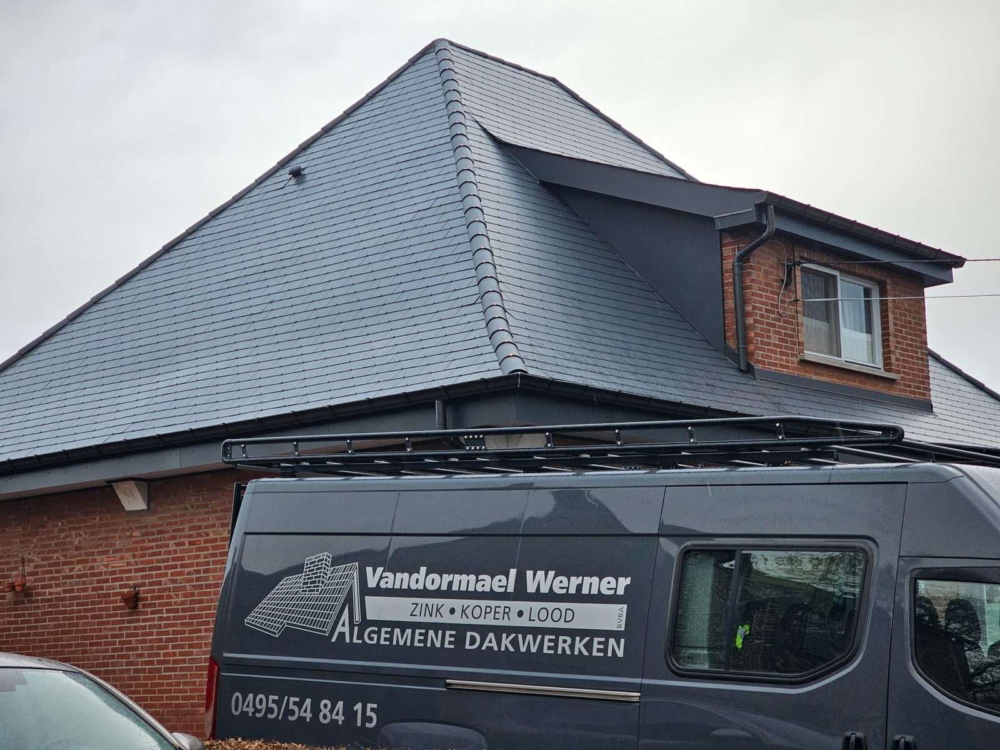
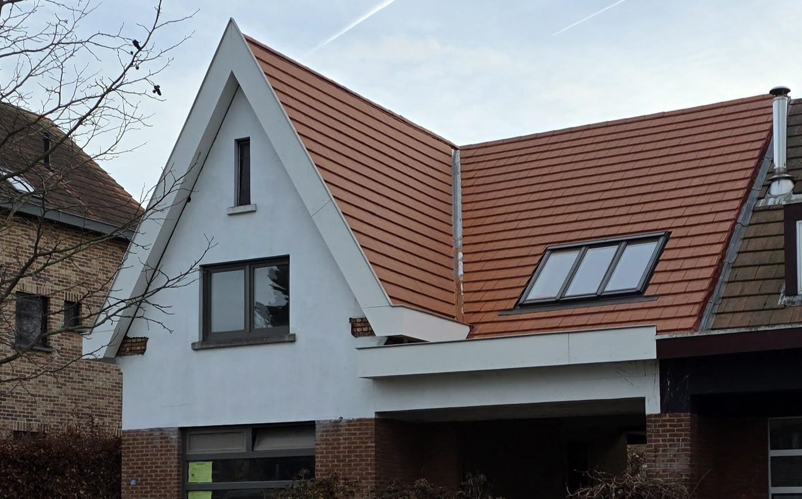
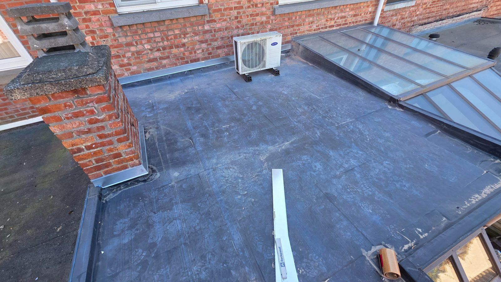
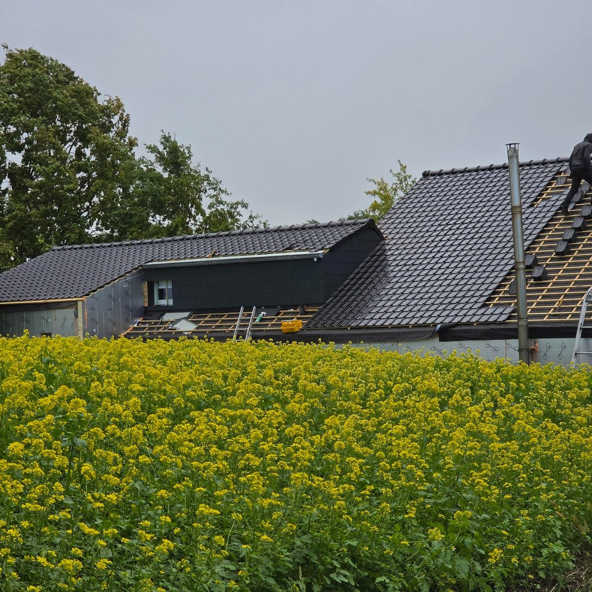
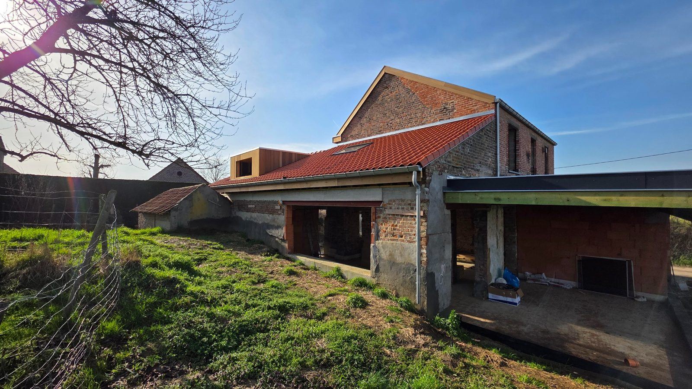

Rechtstreeks contact met Werner zelf.

Dakwerker uit Limburg
Dakwerken in Limburg, uitgevoerd door Vandormael Werner
Vandormael Werner voert dakwerken uit in de ruime regio Limburg, met Wellen als uitvalsbasis. U kan terecht voor hellende daken, platte daken, dakisolatie, dakherstellingen, zink-, koper- en loodwerken en kleinere dakwerken.
Voor kleinere werken én grotere dakprojecten.
Heldere afspraken voor dakwerken, isolatie en herstellingen.
Diensten
Welke dakwerken voert Werner uit?
Dakwerken regio Limburg
Algemene dakwerken
Voor dakrenovatie, onderhoud en praktische dakwerken aan woningen in Wellen en de ruime regio Limburg.
Meer info →
Pannen · leien · renovatie
Hellende daken
Herstelling en renovatie van hellende daken met aandacht voor dakopbouw, aansluitingen en afwerking.
Meer info →
Roofing · EPDM · afwerking
Platte daken
Plaatsing en herstelling van platte daken, met aandacht voor waterdichting, dakranden en afvoer.
Meer info →
Meer comfort onder uw dak
Dakisolatie
Dakisolatie bij renovatie van hellende en platte daken, met de nodige gegevens voor mogelijke premieaanvragen.
Meer info →
Lekken · stormschade · goten
Dakherstellingen
Voor kleinere dakherstellingen, lekkende daken, losse dakpannen, schade of problemen aan goten.
Meer info →
Dakgoten · slabben · aansluitingen
Zink-, koper- en loodwerken
Afwerking van goten, dakranden, loodslabben en aansluitingen voor een duurzaam en waterdicht dak.
Meer info →
Over Vandormael Werner
Rechtstreeks contact met een lokale dakwerker uit Limburg.
Bij Vandormael Werner spreekt u niet met een grote firma of tussenpersoon. U neemt rechtstreeks contact op met Werner, die de situatie mee bekijkt en duidelijk uitlegt wat mogelijk is.
De focus ligt op algemene dakwerken, dakisolatie, hellende daken, platte daken, dakherstellingen en afwerking in zink, koper en lood. Kleinere dakwerken of praktische klussen kunnen mee besproken worden.
- Lokale dakwerker
- Actief in Limburg en omliggende regio
- Voor hellende en platte daken, dakisolatie, dakherstellingen en kleinere klussen
- Duidelijke communicatie en praktische afspraken
- Bereikbaar via telefoon, e-mail, WhatsApp of contactformulier
Onze werkwijze
Zo pakken we uw dakwerk aan
Geen ingewikkeld traject. Eerst duidelijk bekijken wat nodig is, daarna praktisch afspreken en correct uitvoeren.
1
Contact
U neemt contact op via telefoon, mail of het formulier.
2
Situatie bekijken
We bekijken wat er aan de hand is en welke oplossing logisch is.
3
Plaatsbezoek indien nodig
Als het niet duidelijk is op afstand, plannen we een plaatsbezoek.
4
Duidelijke uitleg
U krijgt heldere uitleg over de mogelijke aanpak en uitvoering.
5
Uitvoering
Na akkoord worden de werken praktisch ingepland en correct uitgevoerd.
Werkgebied
Dakwerken regio Limburg
Vandormael Werner werkt vanuit Wellen en voert dakwerken uit in de ruime regio Limburg. Afhankelijk van het project zijn ook werken in omliggende gemeenten buiten Limburg mogelijk.
Onder meer in de regio Wellen, Hasselt, Sint-Truiden, Tongeren, Borgloon, Bilzen, Diepenbeek en omliggende gemeenten.
Recente dakwerken
Een selectie van uitgevoerde dakwerken
Extra dienstpagina
Kleinere dakwerken en klussen
Praktische werken aan dak, woning of bijgebouw.
Naast grotere dakwerken kunnen ook kleinere dakwerken of praktische klussen besproken worden. Deze service blijft aanvullend op de dakwerken.
- Kleine herstellingen
- Praktische werken rond woning of bijgebouw
- Afwerking en kleine aanpassingen
- Te bespreken volgens de situatie

Veelgestelde vragen
Veelgestelde vragen over dakwerken
Voert Vandormael Werner dakwerken uit in heel Limburg?
Vandormael Werner werkt vanuit Wellen en voert dakwerken uit in de ruime regio Limburg. Afhankelijk van het project zijn ook werken in omliggende gemeenten buiten Limburg mogelijk.
Voor welke dakwerken kan ik contact opnemen?
U kan contact opnemen voor algemene dakwerken, hellende daken, platte daken, dakisolatie, dakherstellingen, zink-, koper- en loodwerken en kleinere dakwerken.
Kan ik foto's van mijn dak doorsturen?
Ja, u kan foto's doorsturen zodat de situatie eerst bekeken kan worden. Indien nodig wordt daarna een plaatsbezoek ingepland.
Doet Vandormael Werner ook kleinere dakwerken?
Ja, naast grotere dakwerken kan u ook contact opnemen voor kleinere dakwerken en klussen in en rond de woning.
Kan ik terecht voor dakisolatie?
Ja, Vandormael Werner voert dakisolatiewerken uit als onderdeel van dakwerken of renovatie. Bij uitvoering kunnen de nodige factuurgegevens en documenten worden voorzien voor een mogelijke premieaanvraag.
Contact
Contact opnemen met Vandormael Werner
Wilt u een dakwerk bespreken? Bel Werner of stuur een WhatsApp-bericht. U kan ook enkele foto's via e-mail of WhatsApp meesturen, zodat de situatie eerst bekeken kan worden.